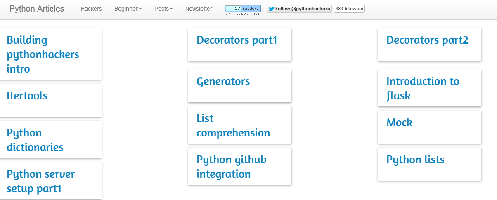
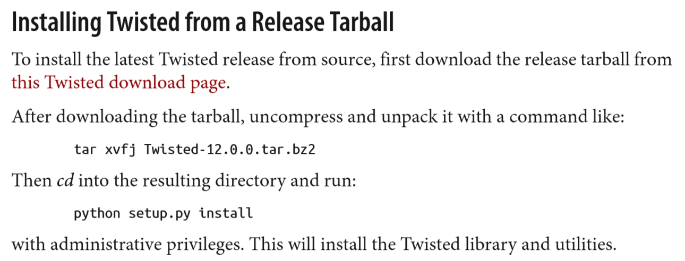
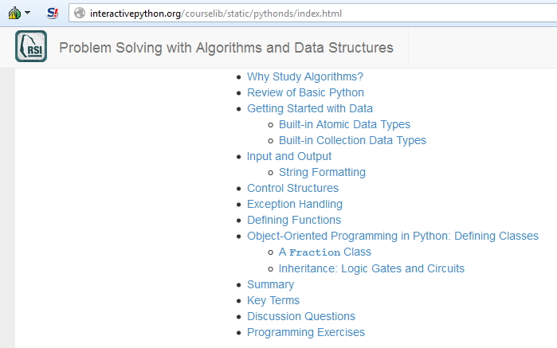
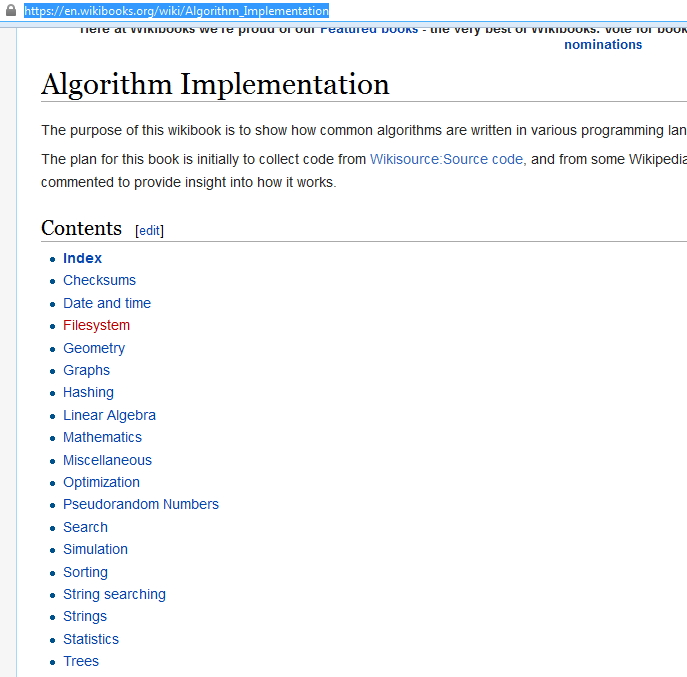
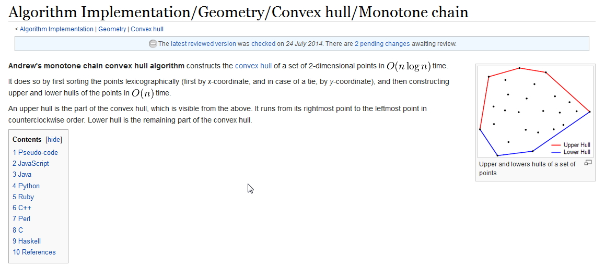
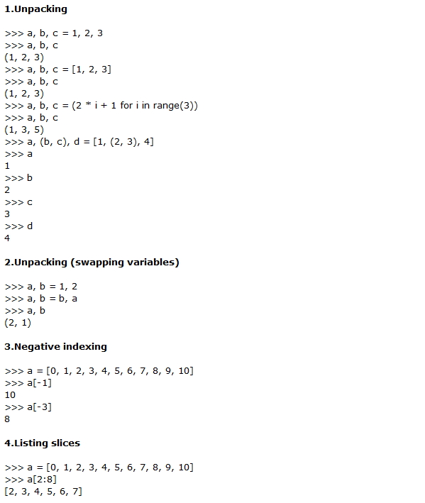
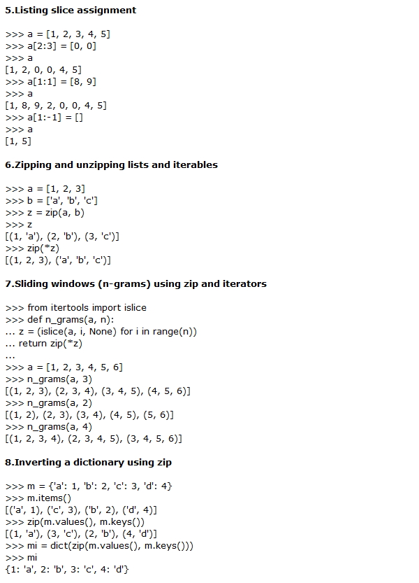
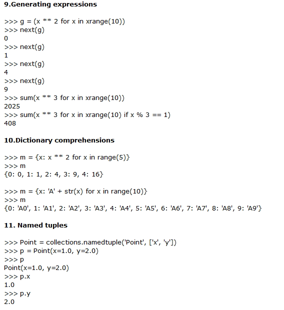
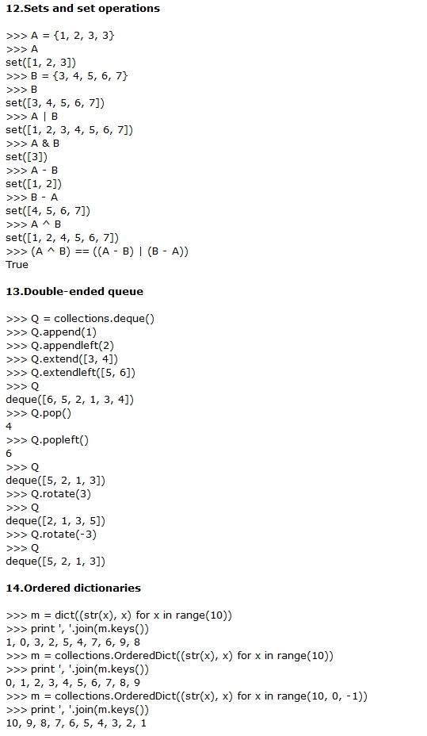
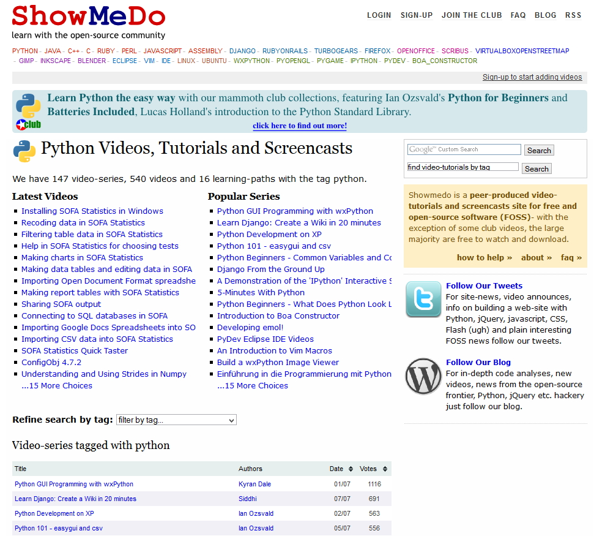

Python Interactive Tutorial From Codecademi.
Example 9:

Project Device Server Solutions.
E:
At this stage of this client server program we need to store the data came from devices to a file for confirmation report
and regular report. We are need to store the data as date-time wise. So we also need to extract the data by date and time wise too.
In that case we need the techniques to query the data by date range and time range. In python we can create a list of a date range.
This list can be used to filter the list from the main data list. If the main data is too big then it is not fair to run query over
python shelve. Let see how to get a list of a date range.
Device To Databse Relation.
We need to store the data coming from device in a universal manner. There are three fields (device_id, date, time) should be combined to
form primary key. But in many cases data could come in same time. In that case data repeatation could happen. So we need a auto generated
serial number with every record to form a primary key, or there it could be possible to use no primary key.
Some Libraries.
MathPlotLib

SqlAlchemy.
Link

Good Tutorials.
Link

MathPlotLib

Python Twisted Network Library.
LINK Downloaded In
F:\Dropbox\LINUX\DOCS\Python\twisted-network-programming-essentials/Twested.pdf
MathPlotLib

SQLite3 Create a python file to create database and tables:
Algorithms In Python.
LINK

Main Book:
http://interactivepython.org/courselib/static/pythonds/index.html
Control Structure:
http://interactivepython.org/courselib/static/pythonds/Introduction/ControlStructures.html
Minimum Exception:
http://interactivepython.org/courselib/static/pythonds/Introduction/ExceptionHandling.html
Create Some Classes:
http://interactivepython.org/courselib/static/pythonds/Introduction/ObjectOrientedProgramminginPythonDefiningClasses.html
Algorithms In C C# Python.
LINK

Few source codes are downloaded in
/dropbox/Ebooks/ folder as several pdf files.
Here checksum Damm Algorithm in Python:

Algorithm Implementation/Geometry/Convex hull/Monotone chain.

18 Interesting Python Tips And Tricks For You!.
LINK





Ctrl + Alt + F1
You would already know that Linux can support various terminals. This command helps you move to the first terminal from wherever you are.
Ctrl + Alt + Fn (n=1..6)
In the standard setup, Linux can support a total of 6 terminals. This command lets you move to the terminal of your choice.
tty
This command is used to print the name of the terminal that you are currently using.
Ctrl + Alt + F7
This command is used to move to the graphical user interface terminal.
Ctrl + Alt + Fn (n=7..12)
This command helps the user go to the desired graphical user interface terminal. As a default setup, these terminals aren’t running anything, but one can use them to run a different server.
Tab
When you’re using a text terminal, you can use this command to autocomplete a command. If there is only one option, then the command is completed automatically, else it shows all the options that are available.
ArrowUp
This is used to scroll up and edit the command history. You need to press enter in order to execute this.
Shift + PgUp
This one scrolls the terminal output upwards. It also works on the login prompt, thereby allowing the user to scroll through whatever messages there are during bootup.
Shift + PgDown
Same as above, just scroll downwards.
Ctrl + Alt + +
In the X-windows system, this command is used to change the resolution of the next X-server, if it has been set to multiple resolutions.
Ctrl + Alt + -
This is the opposite of the above command. You use this to change to the previousX-server resolution.
Ctrl + Alt + BkSpc
In the event that the X-windows server that you were using has crashed and there is no way to exit it, this command helps you kill the said X-windows server in such a situation.
Ctrl + Alt + Del
When you’re at the text-mode console, this is the normal shut down command. It shuts the system down and reboots it.
Ctrl + c
This command shuts down the process that is currently running.
Ctrl + d
This command is used in order to logout from the terminal that you are on.
Ctrl + d
This command sends the [End-of-file] to the process that is running. Pressing it twice makes you log out of the system as well.
Ctrl + s
You use this command if you want to stop a transfer to a terminal.
Ctrl + q
If the terminal you’re working on stops responding then this command can help resume the transfer to the said terminal.
Ctrl + z
This command is used to shift the process that is currently running to the background.
exit
This is an alternate command for ‘logout’. It is used to log out of the system.
reset
This command is used to restore to default setting, a terminal that is screwed up. This means that it is displaying odd characters. The command is sometimes invisible when you’re typing it.
MiddleMouseButton
This is how you carry out the copy-paste function in Linux. The command is used best when you have a Linux-enabled three button mouse.
~(tilde)
This command takes you back to the home directory.
. (dot)
This command is for the current directory. A command such as ./the_program is going to try and run the file the_program.
.. (two dots)
This command changes the current directory into the parent directory.
Python Video Tutorial ShowMeDo.
LINK

Python Book On Software Automation (Searching Files, Search Text In Files, Apply Modification On Search,
Excel Spreadsheet Searching and Update ETC).
LINK

Chapter 7 – Pattern Matching with Regular Expressions.